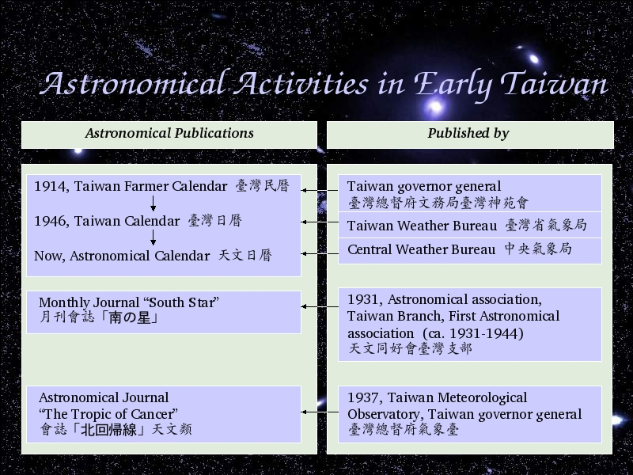

Voice Over:
Let us talk about the astronomical publication.
There are 3 important publications in early taiwan.
The earliest one is Taiwan Farmer Calendar, first published by Taiwan Governor General in 1914.
It changed the name to Taiwan Calendar in 1946, published by Taiwan Weather Bureau.
Now the name is Astronomical Calendar which is published by Central Weather Bureau.
The second one is Monthly Journal, South Star, published by Astronomical Association Taiwan Branch.
The third one is The Tropic of Cancer, published by Taiwan Meteorological Observatory.